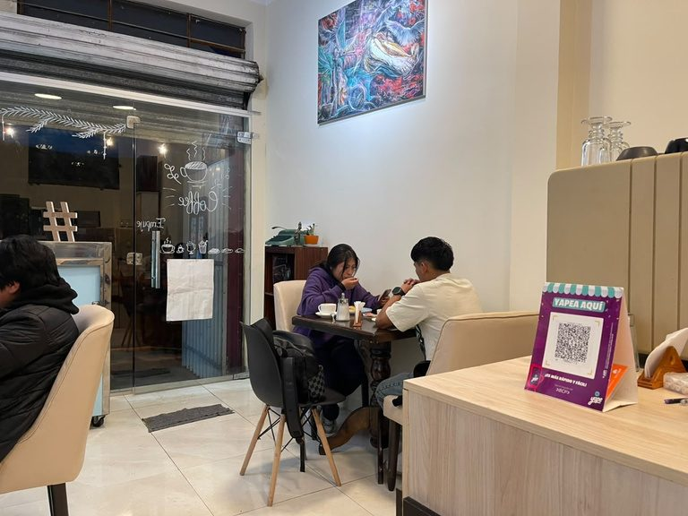
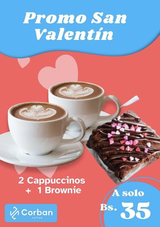
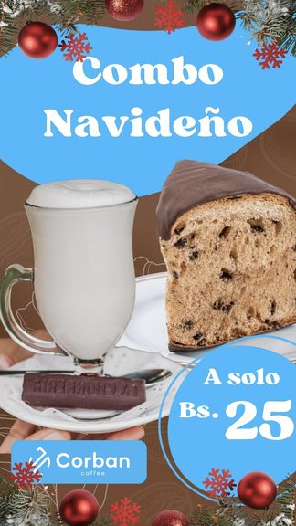
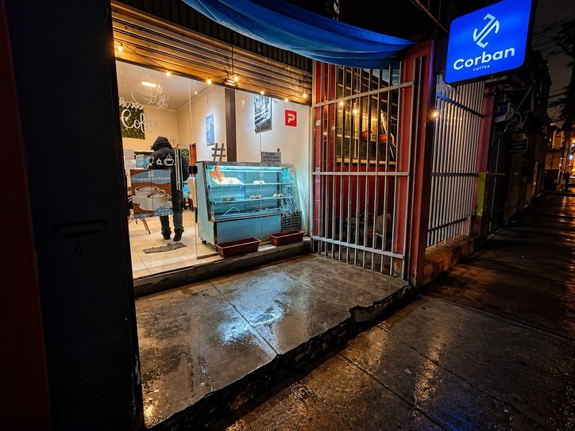

Misión
Ofrecer café, postres y una atención cercana que conviertan cada visita en una pausa agradable en medio de la rutina.
Una cafetería de Miraflores donde el café, los postres y la atención cercana se encuentran. Visítanos en la calle Villalobos.
Cómo llegar
Jhaneth, nuestra propietaria, dejó un trabajo estable para apostar por su pasión por la pastelería. En noviembre de 2025 nació Corban Coffee, una cafetería de Miraflores donde café, postres y atención cercana se encuentran.
Mayo de 2026 nos puso a prueba: la crisis social dificultó el abastecimiento y redujo la afluencia de clientes. Aun así decidimos seguir abiertos y mantener nuestros precios. Corban resistió, y ahora el objetivo es crecer.
Ofrecer café, postres y una atención cercana que conviertan cada visita en una pausa agradable en medio de la rutina.
Ser una cafetería con identidad y prestigio, que más personas conozcan y prueben, sin perder la calidad ni la atención cercana que nos caracteriza.



Bs 60
Bs 120
Bs 70
La pasión que dio origen a Corban.
Combos de temporada a precios accesibles.
Ideal para estudiantes, personal médico y quienes pasan por la zona.